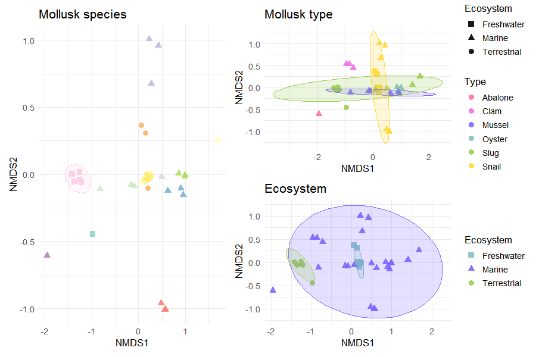
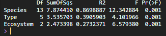

To contextualize the microbiota of Deroceras laeve, a comparative analysis was conducted using publicly available metagenomic datasets from other mollusk species.
This approach allowed the identification of shared and distinct microbial patterns across taxa, as well as the exploration of ecological and host-associated influences on microbiota composition.
6.1 Data Integration and Preprocessing
Metagenomic datasets from additional mollusk species were retrieved from public repositories and processed using the same taxonomic classification pipeline.
All datasets were combined into a single BIOM table and imported into R using the phyloseq package, allowing standardized downstream analyses.
Taxonomic labels were cleaned to remove database-specific prefixes, ensuring consistent downstream processing. The dataset was filtered to retain only archaeal sequences and remove unclassified genera.
Metadata were extracted directly from the phyloseq object and augmented with manually curated biological information, including host type (e.g., slug, snail) and ecosystem (terrestrial, freshwater, marine).
A simplified species label was generated to improve visualization and readability in downstream plots.
Counts were transformed into relative abundances (percentages) to allow comparison across samples with different sequencing depths.
Taxa were aggregated at the phylum and genus levels using taxonomic glomeration.
Code
percentages <-transform_sample_counts( mollusk_physeq,function(x) x *100/sum(x))
6.3.2 Phylum-Level Composition
The ten most abundant phyla were selected based on mean relative abundance across samples. Remaining taxa were grouped as “Others” to simplify visualization.
A secondary annotation bar was added to indicate the ecosystem associated with each host species, providing ecological context to taxonomic patterns.
Differences in alpha diversity across species were evaluated using the Kruskal–Wallis test, a non-parametric alternative to ANOVA, suitable for ecological data that do not meet normality assumptions.
When significant differences were detected, pairwise comparisons were performed using Dunn’s test with Benjamini–Hochberg correction to control for multiple testing.
Code
alpha_df <-estimate_richness( mollusk_physeq, measures =c("Chao1", "Shannon", "Simpson"))alpha_df$Species <-sample_data(mollusk_physeq)$Specieskruskal.test(Shannon ~ Species, data = alpha_df)#Post hoc testlibrary(FSA)dunnTest(Shannon ~ Species, data = alpha_df, method ="bh")
6.5 Beta Diversity (NMDS)
Community composition differences were assessed using Bray–Curtis dissimilarity, a metric commonly used in ecological studies.
Non-metric multidimensional scaling (NMDS) was applied to visualize similarities between samples in reduced dimensional space.
Ellipses were included to highlight group-level clustering patterns.
Code
dist_bc <- phyloseq::distance(mollusk_physeq, method ="bray")set.seed(123)nmds_bc <-metaMDS(dist_bc, k =2, trymax =100)nmds_df <-as.data.frame(nmds_bc$points)nmds_df$SampleID <-rownames(nmds_df)nmds_df <- nmds_df %>%left_join(metadata, by ="SampleID")
Plot:
Code
ggplot(nmds_df, aes(MDS1, MDS2, color = Species)) +geom_point(size =3) +stat_ellipse() +theme_minimal()

6.6 PERMANOVA
Permutational multivariate analysis of variance (PERMANOVA) was used to test whether microbial community composition differed significantly between groups (species, type, and ecosystem).
This method evaluates whether centroids of groups differ in multivariate space.
Code
adonis2(dist_bc ~ Species, data = metadata)adonis2(dist_bc ~ Type, data = metadata)adonis2(dist_bc ~ Ecosystem, data = metadata)

6.6.1 Dispersion Analysis
To validate PERMANOVA results, homogeneity of dispersion was assessed using betadisper.
This step ensures that detected differences are due to shifts in community composition rather than differences in within-group variability.
The same analytical framework can be applied to other microbial groups by modifying the selected taxonomic subset according to the rank of interest and the structure of the dataset.
For example, some groups can be selected directly at the Kingdom level:
Code
subset_taxa(dlaeve_physeq, Kingdom =="Bacteria")mollusk_physeq <-subset_taxa(mollusk_physeq, Genus !="")subset_taxa(dlaeve_physeq, Kingdom =="Viruses")mollusk_physeq <-subset_taxa(mollusk_physeq, Genus !="")
In other cases, more specific taxonomic ranks may be used. For fungal analyses, representative phyla were selected as follows: